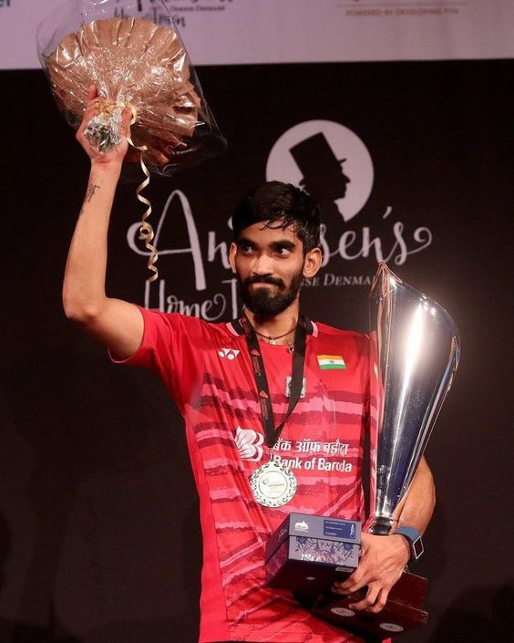

Kidambi Srikanth

Srikanth Kidambi (born 7 February 1993) is an Indian badminton player. A former world no. 1, Kidambi was awarded the Padma Shri, India's fourth highest civilian award, in 2018. and the Arjuna award in 2015. In 2021, he became the first Indian to reach the World Championship final in the men's singles discipline.
BackGround
Carrer
In the 2011 Commonwealth Youth Games in the Isle of Man, Kidambi won the bronze medal in men's doubles and silver in mixed doubles.He also emerged as the winner in the singles and doubles category at the All India Junior International Badminton Championship held in Pune.
In 2012, Kidambi overcame the then Junior World Champion Zulfadli Zulkiffli of Malaysia in the Maldives International Challenge to claim the men's singles title.
In the Thailand Open Grand Prix Gold event, Kidambi won the men's singles title, beating then world number eight and local favorite Boonsak Ponsana in straight games.In the same year, Kidambi beat reigning champion and Olympian Parupalli Kashyap in the All India Senior National Championships in Delhi to claim his first senior national title.
Kidambi finished runner up at the 2014 India Open Grand Prix Gold event in Lucknow and was a quarterfinalist in the 2014 Malaysian Open.
Kidambi became the first Indian man to win gold at the 2015 Swiss Open Grand Prix Gold by defeating Viktor Axelsen 21–15, 12–21, 21–14. During the same year, he also won the India Open Super Series title by defeating Viktor Axelsen in the final
Kidambi reached the semifinal in the Malaysia Masters, where he lost to Iskandar Zulkarnain Zainuddin of Malaysia in January.
In the 2016 Rio Olympics, the World No. 11 Kidambi entered the Round of 16 of the men's singles by beating Lino Muñoz and Henri Hurskainen. He went on to beat World No. 5 Jan Ø. Jørgensen 21–19, 21–19 to reach the quarterfinals, but was defeated by Lin Dan by a score of 6–21, 21–11, and 18–21.
Kidambi and Sai Praneeth created history when they became the first ever Indian pair to enter the finals of a ranking event in Badminton. Both hailing from Hyderabad and being coached by Pullela Gopichand, it was Sai Praneeth who prevailed 17–21, 21–17, 21–12 eventually to clinch the Singapore Super Series title.
Kidambi started 2018 at the India Open as the second seed.
Kidambi represented his country at the South Asian Games in Nepal, and won the gold medal in the team event.
In 2021, Kidambi reached the finals of World championships becoming the first Indian male badminton player to do so. He lost the final to Loh Kean Yew to win the silver medal
Kidambi was part of the Indian men's team for Thomas Cup 2022. The team went on to win the Thomas Cup by beating Indonesia 3–0 in the final, with Kidambi winning his match against Jonatan Christie
Achievements
Commonwealth Games Gold Medal: Kidambi Srikanth won the gold medal in men's singles badminton at the 2014 Commonwealth Games held in Glasgow.
ndonesia Open and Australian Open Titles: Srikanth became the first Indian male badminton player to win back-to-back Super Series titles by winning the Indonesia Open and Australian Open in 2017.
Denmark Open Title: He won the men's singles title at the Denmark Open in 2017
Commonwealth Games Silver Medal: Srikanth won the silver medal in men's singles badminton at the 2018 Commonwealth Games in Gold Coast
For more information, Check out Kidambi Srikanth on Wikipedia. [Developed by @Amar Dwarakacherla]